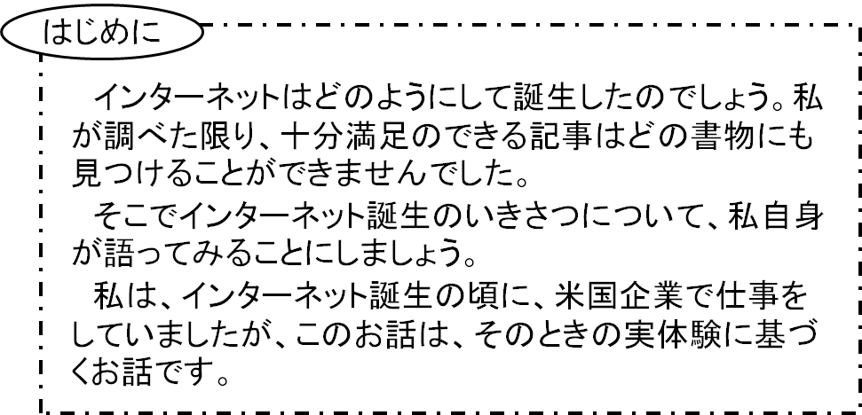

インターネット誕生記
--インターネット誕生の背景--

インターネットの母体は130年という長い歴史を有する電話ネットワークです。各国はその充実発展のため、膨大な予算を注ぎ込みました。米国、日本が先頭に立って世界をリードしてきたと言えるでしょう。この背景には、何が何でも電話所有者になりたいという一般民間人の強烈な渇望がありました。とにかく遠く何百
1925年頃のことですが、電話をぜひ持ちたいという人は、東京では当時1500円という大変な負担金を支払って、電話加入者になっていたのです。1500円って、今でも大きなお金です！
しかし、このような人々の熱烈な要望にこたえるようにして作り上げた電話ネットワークも、 “アナログ電話をサービスするだけでよい” ということで、一般家庭に接続されている電話線はお粗末そのものの針金でした。50ビット/秒がやっとという有様だったのです。高品質そして、高速度が要求されるコンピュータデータを一般加入者線でやりとりするといったことは夢のまた夢でした。
しかし、本当にお粗末な針金の集合体ではありますけれど、クモの巣のように世界中に張り巡らされた電話ネットワークは人類にとって莫大な資産でもありました。何故なら、このお粗末な針金の集合体も工事に要した費用、その間の人件費、世界中に張り巡らされている膨大な量の針金の総コストを考えると、数十年以上も前の段階で、世界全体では現在の価格計算で、すくなく見積っても数百兆円以上という莫大な資産になっていたでしょう。
因みに今から約20年前の平成5年に関西空港が10年の歳月をかけて完成しました。この空港を建設するために要した人件費、建設費全てを合わせると総額1兆4500億円になったといわれています。
一方電話ネットワークの拡充に取り組むNTTはこの年だけで、つまり平成5年度だけで1兆8000億円もの巨費を投入しています[3]。その金額は毎年、毎年関西空港並みの空港を余裕で完成させている金額ですから、電話ネットワーク拡充のために莫大な投資がなされてきたことを実感として理解していただけると思います。もとは2000年直前の時点でもこれだけの投資をしているわけですから、電話120年の歴史のなかで全世界が投入した総経費は少なく見積もっても数百兆円を越える額が推定されるわけです。
さて、1948年米国ベル研究所でトランジスタが誕生しました。情報技術の幕開けです！
トランジスタ技術によって支えられたディジタル情報技術の発展によって、電話ネットワークに高い信頼度、そして高速度が要求されるコンピュータデータを家庭から送受信できる環境が整いました。1960年代半ば頃のことでしたが、お粗末な針金のネットワークを使っても、電話だけでなくコンピュータデータ、メールなどを送ることが十分可能となりました。
莫大な資産価値のある針金をとりかえなくても、端末装置を新しくするだけで一般民間人が電話会社のようなサービス、つまり高信頼度、そして高速のコンピュータデータ、メール等をやりとりする見通しがついたのです！
数百兆円以上の資産を生かしたまま端末を新しくするだけで済む！ このためのコストは数兆円程度で済む！ このことこそがインターネット誕生に結びついたのです。
1970年代はじめ、我が国において、世界特に米国で大きな注目を集めた開発研究が当時通産省のサポートを受け、松下電器（現パナソニック）、シャープ、三洋、大日日本電線など民間企業数社と大阪大学が協力して進められていました。e-mail、テレビは勿論、電気、水道、ガス料金が自動的に計測され料金も自動的に引き落とされ、さらに外出先からの炊飯器、冷暖房機などの家庭内機器のコントロールという先端的プロジェクトが進められ試作機が完成されました。
この成果報告は1970年代はじめに、我が国でもテレビ報道され注目されましたが、米国で開催されたWESCONという大きな国際会議で、非常に大きな注目を集めて発表されました（文献[1]）。
この発表は
“これは津波か．それとも幻影か（Mirage or Tidal Wave?）”
と表現され、注目されました。非常に斬新な日本製インターネットの大きな胎動が世界に向け報告されていたのです。
しかし、非常に残念なことに電話ネットワークは我が国では100%国有でしたから、この胎動は結局我が国では “中絶” という処置がとられてしまいました。 試作装置は大阪府生駒山に所在する「生駒サイト」において展示されるだけという存在になりました。世界に大きなインパクトを与えたであろう巨大試作装置はそのまま博物館入りとなってしまったのでした。あぁ・・・。
コンピュータネットワークを全国に広げるだけにはコンピュータにかかわる通産省、電話事業、ネットワークにかかわる郵政省、土木工事にかかわる建設省が複雑にからんでくるからです。そして何よりも電話事業もどきを民間が始めることにきわめて大きな抵抗があったのです。米国においては電話固有率0%であったのに、我が国では100%でしたからね。
米国にとっては押し寄せる津波ではなく、幻影として消えてしまったのです。米国は、我が国の態勢では到底、国のサポートが得られないだろう。そして幻影（ミラージュ）として消滅するだろうと考えていたのかも知れませんね。
私はこのプロジェクトのディジタルの部分を先導的に指導し、全量を傾注していましたので、今でも、非常に残念なことと感じています。国全体で協力すれば、我が国はインターネット世界の構築のため先導的役割が果たせたのでした。
しかし、このことが現実のこととして可能となる国は、電話ネットワークの国有率が全くのゼロパーセントであった米国だけでした。米国には国から一切の制約を受けずに一般市民が自由自在に電話ビジネスを展開することが可能となるとても恵まれた環境がありました。
米国には一般市民のネットワークが大木に成長できる豊かな土壌がととのっており、インターネットの誕生を国を挙げてあたたかくサポートするという態勢がとられていました。結果的に米国の一際口を挟まないという国としての政策が、非常に良かったと言えるかも知れません。
米国の国民性でしょう。ハード的に優れたコンピュータを作ることよりもコンピュータを楽しく使う環境を可能にするソフトを作ることに努力を重ねていました。このような米国企業の姿勢はハードを重視する我が国企業の伝統的姿勢とは180度異なる方向でした。
1960年代後半、米国では大型コンピュータをタイム・シェアリングで常時使用することができました。私も当時、米国企業に勤務していて、コンピュータを好きなときに、会話型で楽しく使っていました。
同じ時代、日本ではバッチ処理が中心で分厚いパンチカードの束をコンピュータセンタに提出し、結果を1日、1週間単位での長い時間、待たねばなりませんでした。大きな大きな差がありました。コンピュータを楽しく使う環境づくりでは米国は他国に比べ20年も先を歩んでいたのです。米国がネット社会で一人勝ちになったのは、米国が特別に努力したわけではなく、いわば自然に今のような状況になっていったのです。
コンピュータの世界で10年も20年も先を歩んでいる米国！ “未来のオフィスで仕事をしている！” そんな喜びを感じながら私は毎日仕事をしていました。この米国の強さこそが、今日のウインドウズ、アップルの圧倒的な強さ、繁栄につながっていったと思います。
大型コンピュータの常時使用可能態勢を支援するベンチャーの人達が、盛んに私の仕事場を訪ねてきて、楽しい使い方を宣伝するマニュアルをお土産に営業活動をします。“コンピュータを楽しく使うためにはありとあらゆる工夫を惜しまない”、この努力こそがインターネット誕生への胎動であり、原動力であったのです。
今から考えてみると我が国では正反対の努力を重ねていたと言ってよいでしょう。そして今もそうしていると言ってよいでしょう。世界最高速コンピュータ、これがセールスポイントでした。しかしこのようなコンピュータは精密さを要する高度の科学計算には役立ちましたけれど、一般市民、一般研究者が楽しくコンピュータを使う環境づくりには殆んど寄与することがなかったのです。
加えて米国の国土は広大で大きな時差がありますね。ニューヨークの人達が一番コンピュータを使用している時間帯の10時～12時はロスアンゼルスのコンピュータは朝6時～8時でほとんど使われていません。電話を通してロスアンゼルスのコンピュータを割安で使えます!!
当時私は米国東海岸の会社に勤務していましたが、1ヶ月500ドルが、コンピュータ使用量の目安として与えられていました。ですから、時差利用による割安のコンピュータは、大歓迎です。
米国ではこのような状況にめぐまれて、大学、企業を中心とするコンピュータ・コミュニケーションネットワークが急速に発展しました。勿論、この動きは国家にとっても、国防、防災の観点からも、大歓迎の路線でした。インターネットの母体であるコンピュータネットワークには国からのあたたかいサポートもあったのです。
しかしこの華やかなコンピュータ・ネットワークにも、改革の波がやがて激しく押し寄せてきます。
1990年代情報技術の更なる大躍進によって
- コンピュータの小型化、低コスト化
- メモリの大容量化、低コスト化
- 通信回線の高速化、低コスト化
が驚異的なペースで進みました。1980年代まで、大学企業に独占されていたコンピュータ、大容量メモリそして大容量通信回線を一般市民が手にすることができるようになったのです。
ここで少しわき道にそれますが、情報技術（インフォメーション・テクノロジー、IT）の本来の意味は上述のように大躍進を続ける “コンピュータ技術、メモリ技術、通信技術を三本柱とする総合技術” ということなのです。世の中では情報ビジネスのことを “IT” と呼んでいますが、これは決して正しい使い方ではありません。
情報技術（IT）の発展によってコンピュータは、一般社会への普及のペースを加速的に速めました。企業、大学等のプロに独占されていたネットワークは、国民一人ひとりがメール、音楽、映像のやり取りができる一般市民中心のインターネットに姿を変えていったのです。
付記1 インターネットに影あり？
インターネットの登場が社会に様々な変化を与えたこと、そしてこれからも大きな影響を与えつつ成長していくことは間違いありません。このことを “インターネットに影あり？” という切り口から考えてみることにしましょう。
インターネットの世界を誕生させた生みの親は
- 演算技術（コンピュータ、ディジタル処理）
- 記録技術（メモリシステム、HD、CD、DVD）
- 通信技術（モバイル、携帯電話）
を中心とする総合技術、すなわち情報技術（Information Techynology、IT）です。
情報技術（IT）を支える三本柱、演算技術、記録技術、通信技術のことごとくが、1960年以降、つまり過去半世紀以上、倍々、倍々と年々爆発的ペースをゆるめることなく成長を続けています
この爆発的成長によって、一昔前には大企業、研究所しか持つことができなかったレベルの大型コンピュータ、大容量メモリ、大容量通信回線と同レベルあるいはそれ以上の能力をもつコンピュータ、メモリそして通信回線を、今では国民一人ひとりが手に入れることができるようになりました。
公序良俗に反しない限り、ネットワークを利用して、これらを自由自在に活用することによって自分自身だけでなく友人、周りの人達の成長につなげていくことができます。
しかしこのインターネットにも大きな影があることが、度々テレビや新聞で大きく報じられますね。例えば個人情報400万人分流出といったようなニュースです。
個人情報流出といったような事件は20世紀以前にもありました。ただ “個人情報流出” という問題がインターネットの誕生以前と以後とでは全く趣を異にして現われるということです。つまりインターネットに流出すると
- 地球上、何億人もの人が、その個人情報を瞬間的に手に入れることが可能となって、その被害が底知れず大きくなること
にあるわけです。唯一個のウイルスが、全世界のコンピュータを麻痺させるといったことも決して “想定外” ではありません。そのための対処法の一つは、拙著：『情報技術の人間学』[2]に記述していますので、ご興味があればご高覧下さい。
インターネットの影は多くの場合目に見える形であらわれます。その影は、何十億円の損失といったように、その結果が目に見える形であらわれます。目に見える形であらわれる影は、ある意味で対処しやすい影といえるかもしれませんね。
これに対し、目に見えない影、実はこの影のほうが手ごわい影かもしれません。つい最近卒業した私の教え子の一人が、母校で「情報」の教員資格をとるために教育実習を行いましたが、そのとき彼女は「ネットワーク依存症」について卒業論文をまとめることを決心しました。このネットワーク依存症は目に見えない形であらわれる影と言えるかも知れません。
技術はこれに向う私達の姿勢によって光ともなり、また影ともなります。その影は交通技術のように人を傷つける悲惨な大事故となり、またエネルギー技術は福島第一原発事故[3]のように、異常に高い放射線量、あるいは出し平ダム事故[3]におけるヘドロ放出事故のように目に見える形であらわれます。
では、情報技術はどうでしょうか。情報技術はエネルギー依存社会からの脱却を可能とし、地球温暖化、自然環境破壊をくいとめる “救世主” としての役割を果すことが強く期待されています。情報技術にはクリーンな技術として、非常に大きな期待が寄せられているのです。
しかし、情報技術に立ち向う私達の姿勢が、100パーセント原因となって、その影が、想像を絶するほど大きなものとなって、目に見えない形で確かに私達を包み込んで存在しています[4]。情報技術においては、その影が真に腹蔵された形で存在しているだけに、最も手強い影をともなった技術と考えることができるでしょう。
情報技術の影は、この技術に立ち向う私達の姿勢が100パーセントその原因となって引き起こされるということを、繰り返し主張しておきましょう。つまり
“情報技術にきづかぬ影あり”
なのです。
情報技術には、赤ちゃんの育児環境に忍び寄っている大きな影があります。誰もが気づかないうちに私達をすっぽり包み込んでいる大きな影です。この厄介な影については、是非、『赤ちゃんの人権宣言』をお読みいただきたく、お願い致します。
この厄介な大きな影も、ネットワークの力によって、皆の力を合わせることができ、消滅させることが可能となるでしょう！
- このことをインターネットの大きな光として考えることができるでしょう！
- インターネットは影の部分よりも光の部分の方が遥かに大きいのです！
- インターネットは自浄能力を発揮しながら今後益々発展していくでしょう！
参考文献
- [1] T. Namekawa, M. Kasahara and M. Murata：“TWO-WAY INFORMATION DISTRIBUTION SYSTEM FOR LOCAL COMMUNITY”，Universal Digital Transmission --Mirage or Tidal Wave?，1972 Wescon Technical Papers（1972）．
- [2] 笠原正雄：『情報技術の人間学』， 電子情報通信学会， コロナ社（2007）．
- [3] 笠原正雄：“電子商取引時代のセキュリティと倫理”，第46回大阪古河数養講座（1998）．
- [4] ミニ原発事故？（笠原正雄HP）
- [5] 赤ちゃんの人権宣言（笠原正雄HP）